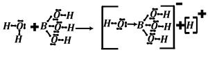
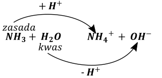
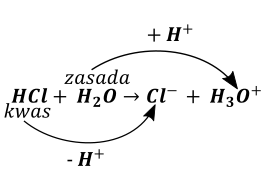
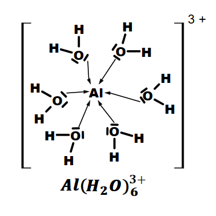
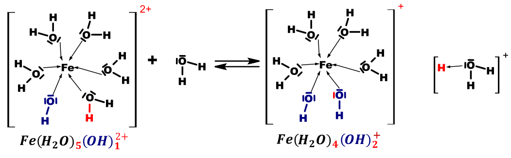
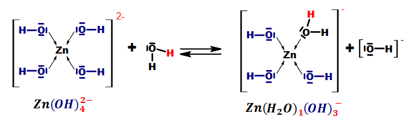
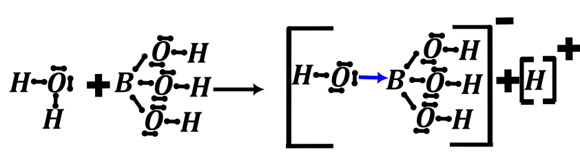

Kwas to jest związek, który dysocjuje (=rozpada się pod wpływem rozpuszczalnika) na jony \(H^{+}\) i aniony reszty kwasowej \(R^{-}\) , np. \(H_{2}SO_{4}\) czy \(CH_{3}COOH\)
\[H_{2}SO_{4} \rightarrow 2H^{+} + SO_{4}^{2 -}\]
\[CH_{3}COOH \rightarrow CH_{3}COO^{-} + H^{+}\]
Ale natomiast w myśl teorii Brønsteada kwasem nie jest np. \(H_{3}BO_{3}\) . Kwas ten nie oddaje swojego wodoru, ale przyjmuje grupę \(OH^{-}\) z cząsteczek wody w myśl reakcji:
\[H_{3}BO_{3} + H_{2}O \rightarrow B(OH)_{4}^{-} + H^{+}\]

Zasada w teorii Arrheniusa to jest związek, który dysocjuje na kationy metalu i aniony \(OH^{-}\)
\[NaOH \rightarrow Na^{+} + OH^{-}\]
Ale rozpatrując dysocjację amoniaku:
\[NH_{3} + H_{2}O \rightleftarrows NH_{4}^{+} + OH^{-}\]
Amoniak, nie jest zasadą w teorii Arrheniusa, gdyż jony \(OH^{-}\) pochodzą z obecnej w układzie wody, a nie z cząsteczki zasady (amoniaku). Dodatkowo teoria Arrheniusa nie tłumaczy w żaden sposób nieobojętnego odczynu soli, np. zasadowego odczynu \(Na_{2}CO_{3}\) czy kwasowego odczynu \(NH_{4}Cl\) . Z uwagi na dużą ilość wyjątków należy teorię odrzucić albo lepiej – traktować ją, jako teorię historyczną i obecnie nie jest ona zupełnie używana w nauce, ani co nas bardziej interesuje na maturze.
Teoria Brønsteada mówi o reakcjach kwasowo –zasadowych jako o wymianie jonów \(H^{+}\) ; w tej teorii kwas jest zdefiniowano jako drobina oddająca jony \(H^{+}\) (źródło, donor jonów \(H^{+}\) ), natomiast zasada jako coś co drobina przyjmująca jony \(H^{+}\) (akceptor jonów \(H^{+}\) ).
Należy podreślić, iż sam goły jon \(H^{+}\) w tej teorii nie istnieje, natomiast zamiast niego należy zapisywać protonowaną cząsteczkę rozpuszczalnika (po prostu rozpuszczalnik do którego przyłączyliśmy proton), np. w wodzie \(H_{2}O\) należy zapisać \(H_{3}O^{+}\) . Jon ten nazywany jest jonem oksoniowym i stanowi on protonowaną cząsteczką wody, natomiast ogólnie w innych rozpuszczalnikach zamiast \(H^{+}\) piszemy protonowany rozpuszczalnik czyli rozpuszczalnik, który ma przyłączony dodatkowy \(H^{+}\) , np. \(H_{2}SO_{4} -^{+ H^{+}} \rightarrow H_{3}SO_{4}^{+};\ \ \ \ HNO_{3} -^{+ H^{+}} \rightarrow H_{2}NO_{3}^{+};\ \ \ \ \ \ CH_{3}OH -^{+ H^{+}} \rightarrow CH_{3}OH_{2}^{+}\) Należy podkreślić, iż napisanie gołego jonu \(H^{+}\) jest błędem w teorii Broensteda i jest zwyczajnie niedopuszczalne, tzn. Dostajemy zero punktów za zadanie.
W teorii Brønsteada każdą reakcję kwasowo – zasadową możemy zapisać jako wymianę jonu \(H^{+}\) pomiędzy dwoma indywiduami. Jedna z reagujących drobin jest kwasem (ta, która oddaje \(H^{+}\) , natomiast druga jest zasadą – ta, która przyjmuje \(H^{+}\) )


Natomiast nigdy \(HCl \rightarrow H^{+} + Cl^{-}\) . W tej teorii ten zapis jest błędnym, bo mamy w nim gołe \(H^{+}\) .
W tej teorii również mamy związki, które nijako są bi, czyli raz się zachowują jak kwas a raz jak zasada, jak choćby woda w dwóch powyższych reakcjach. W reakcji 1. Jest kwasem, w w drugiej zasadą; takie związki/jony nazywamy amfiprotami/ związkami amfiprotyczne.
W teorii Brønsteada bardzo ważnym pojęciem jest „sprzężona para kwas zasada” – są to dwie drobiny, których struktury różnią się między sobą DOKŁADNIE jednym \(H^{+}\) . Sprzężony kwas w parze ma zawsze o jeden wodór więcej oraz ładunek o jeden większy (bardziej dodatni) od drobiny sprzężonej zasady.
Czasem metoda może ta prowadzić do nieoczekiwanych struktur, takich jak \(H_{3}SO_{4}^{+},\ H_{2}NO_{3}^{+}\ czy\ CH_{3}OH_{2}^{+}\) , ale zupełnie się tym nie przejmujemy, jeżeli rzecz spełnia opisaną metodę to jest poprawna.
Dla typowych związków można np. Powiedzieć:
| kwas \(( + H^{+})\) | zasada \(( - H^{+})\) | kwas | zasada |
|---|---|---|---|
| \[H_{2}CO_{3}\] | \[HCO_{3}^{-}\] | \[H_{3}SO_{4}^{+}\] | \[H_{2}SO_{4}\] |
| \[H_{2}O\] | \[OH^{-}\] | \[HSO_{4}^{-}\] | \[SO_{4}^{2 -}\] |
| \[OH^{-}\] | \[O^{2 -}\] | \[H_{2}PO_{4}^{-}\] | \[HPO_{4}^{2 -}\] |
| \[H_{3}O^{+}\] | \[H_{2}O\] | \[H_{2}NO_{3}^{+}\] | \[HNO_{3}\] |
| \[NH_{3}\] | \[NH_{2}^{-}\] |
Dodatkowo z tego przedstawionej zależności można wywnioskować warunki, które musi spełniać drobina, aby w ogóle być kwasem lub zasadą Brønsteada. Mianowicie, aby drobina była kwasem musi mieć możliwość oddania wodoru o ładunku dodatnim \(\left( H^{+} \right)\) , czyli musi zawierać wodór przyłączony do bardziej elektroujemnego atomu. Natomiast, aby drobina była zasadą musi mieć możliwość przyłączenia kationu wodoru, przyłączamy \(H^{+}\) , a jak dobrze wiemy to żeby go przyłączyć to musi być miejsce na niego czyli wolna para elektronowa najlepiej na jakimś atomie co ma ujemny ładunek. Oczywiście, które drobiny są kwasami a które zasadami zależy dodatkowo od użytego rozpuszczalnika, bo jak masz gdzieś dodać \(H^{+}\) to może być tak że łatwiej jest go dodać do wody (rozpuszczalnika) niż do innej cząsteczki. Np. jak mamy roztwór wodno –etanolowy zwany wódką to jak dodamy kwasu np. \(HCl\) to, mimo, że \(CH_{3}CH_{2}OH\) ma wolne pary na atomie tlenu to konkurencje o te \(H^{+}\) wygrywa cząsteczka wody.
Na maturze spotyka się również obecnie drobiny akwajonów i ich pochodnych, takich jak hydroksykompleksy. Trzeba wiedzieć, że wszystkie kationy metali i w sumie większość anionów występuje w postaci akwajonów – akwajony to jak samo nazwa wskazuje jony otoczone przez cząsteczki wody wiązaniami koordynacyjnymi, o ilości wód mówi liczba koordynacyjna danego jonu.
Jak mamy jon \(Al^{3 +}\) to on jest wstydliwy i dołącza sobie sześć wód.
Tego \(Al^{3 +}\) nie ma tylko tak naprawdę jest \(Al\left( H_{2}O \right)_{6}^{3 +}\) i wygląda tak:

Zrozumienie działania teorii Brønsteada dla akwajonów czy jonów hydroksykompleksów wymaga rozrysowania struktury Lewisa danego jonu. W tym celu rysujemy jon metalu w centrum, otaczając go przez cząsteczki wody i jony hydroksylowe i przyłączając je wiązania koordynacyjnymi. Bilans ładunków można powiedzieć jaki jest ładunek takiego jonu kompleksowego (jest on równy różnicy ładunku jonu metalu i ilość grup \(\ OH^{-}\) )
Kolejno, aby stworzyć sprzężoną zasadę do danego kwasu będącego jonem kompleksowym należy od jonu wody w strefie koordynacyjnej metalu odłączyć jon \(H^{+}\) , ta cząsteczka wody wówczas przekształca się w jon \(OH^{-}\)

Co można zapisać w postaci:
\[Fe\left( H_{2}O \right)_{5}(OH)^{2 +} + H_{2}O \rightleftarrows Fe\left( H_{2}O \right)_{4}(OH)_{2}^{+} + H_{3}O^{+}\]
Analogicznie, aby narysować strukturę kwasu sprzężonego do danej zasady w teorii Brønstead mając jej strukturę Lewisa należy przyłączyć kation \(H^{+}\) do wolnej pary elektronowej występującej na jonach w \(OH^{-}\) w strefie kordynacyjnej kationu metalu:

\[Zn(OH)_{4}^{2 -} + H_{2}O \rightleftarrows Zn\left( H_{2}O \right)(OH)_{3}^{-} + OH^{-}\]
\[Al\left( H_{2}O \right)_{5}(OH)^{2 +} + H_{2}O \rightleftarrows Al\left( H_{2}O \right)_{4}(OH)_{2}^{+} + H_{3}O^{+}\]
Ogólna metoda zamiany jednego na drugie dla omówionych kompleksów/ akwajonów: przy zamianie sprzężonego kwasu w sprzężoną zasadę to jest zamiana jednego z ligandów \(H_{2}O \rightarrow OH^{-}\) , natomiast dla zamiany sprzężona zasada→ sprzężony kwas rzecz polega na zamianie jednego z ligandów \(OH^{-}\) na \(H_{2}O\) . ZAWSZE ZAMIENIASZ TYLKO JEDEN, dodatkowo pamiętaj, że sumaryczny łądunek kompleksu= suma ładunków jonów.
| \[H_{2}PO_{4}^{-}\] | \[HPO_{4}^{2 -}\] | \(CH_{3}CH_{2}OH_{2}^{+}\) (i tutaj tego wodora przyłączamy tam gdzie jest wolna para elektronowa) | \[CH_{3}CH_{2}OH\] |
|---|---|---|---|
| *** \(Al\left( H_{2}O \right)_{5}(OH)^{2 +}\) | \[Al\left( H_{2}O \right)_{4}{(OH)_{2}}^{+}\] | \[CH_{3}COOH\] | \[CH_{3}COO^{-}\] |
| *** \(Al\left( H_{2}O \right)_{6}^{3 +}\) | \[Al\left( H_{2}O \right)_{5}(OH)^{2 +}\] |
\[CH_{3}COOH_{2}^{+}\] |
\[CH_{3}COOH\] |
| \[Zn\left( H_{2}O \right)(OH)_{3}^{-}\] | \[Zn(OH)_{4}^{2 -}\] |
Wszystkie reakcje kwasowo zasadowe w teorii Brønsteada można przedstawić w formie
\[kwas_{1} + zasada_{2} \rightleftarrows zasada_{1} + kwas_{2}\]
Gdzie
\(kwas_{1}\ i\ zasada_{1}\) to sprzężona para kwas zasada
\(zasada_{2}\ i\ kwas_{2}\) to sprzężona para kwas zasada
\[NH_{3} + H_{2}O \rightleftarrows NH_{4}^{+} + OH^{-}\]
\(Z_{1}\ \ \ \ \ \ \ \ K_{2}\ \ \ \ \ \ \ \ \ \ \ \ \ \ \ \ K_{1}\ \ \ \ \ \ \ \ \ \ \ Z_{2}\ \)
\[Al\left( H_{2}O \right)_{5}(OH)^{2 +} + H_{2}O \rightleftarrows Al\left( H_{2}O \right)_{4}(OH)_{2}^{+} + H_{3}O^{+}\]
\[K_{1}\ \ \ \ \ \ \ \ \ \ \ \ \ \ \ \ \ \ \ \ Z_{2}\ \ \ \ \ \ \ \ \ \ \ \ \ \ \ \ \ \ \ \ \ \ \ \ \ \ \ \ \ \ \ \ Z_{1}\ \ \ \ \ \ \ \ \ \ \ \ \ \ \ \ \ \ K_{2}\]
Przeważający Kierunek zachodzenia tej reakcji mówi o tym, co jest silniejszym kwasem, a co silniejszą zasadą.
\[HCl + H_{2}O \rightarrow H_{3}O^{+} + Cl^{-}\]
\[kwas_{1} + zasada_{2} \rightleftarrows kwas_{2} + zasada_{1}\]
Jeżeli chodzi o właściwości kwasowe to
\[kwas_{1} > kwas_{2}\ \ \ \ \ \ HCl > H_{3}O^{+}\]
Zasadowe
\[zasada_{1} > zasada_{2}\ \ \ \ \ \ \ \ \ {\ H}_{2}O > Cl^{-}\]
Jeżeli chcesz zaprojektować doświadczenie: żeby porównać moc kwasów należy przeprowadzić dwa doświadczenia: zmieszać \(kwas_{1}\) z (sprzężoną) zasadą z \(kwa{su}_{2}\) i drugie doświadczenia: zmieszać \(kwas_{2}\) z (sprzężoną) zasadą z \(kwa{su}_{1}\) .
Można tą reakcję porównać marynarzy, powiedzmy pierwszego silniejszego –wojskowego i drugiego słabszego – cywilnego, którzy chcą jednej dziewczyny i chcesz udowodnić, że marynarz wojskowy (1.) jest silniejszy niż cywilny (2.).
Należy przeprowadzić dwa doświadczenia, w pierwszym jeden marynarz (silniejszy) wchodzi do baru z laską (jest z nią w związku), a potem wchodzi drugi marynarz (słabszy). Słabszy marynarz wyjdzie sam z baru. Reakcja wtedy nie zajdzie, bo silniejszy marynarz raczej słabszemu fajnej kobiety nie odda.
\[Mar_{silny} - Kobieta + Mar_{slaby} \rightarrow brak\ reakcji\]
\[NaCl + HF \rightarrow brak\ reakcji\]
\[Cl^{-} + \ HF \rightarrow brak\ reakcji\]
W drugim doświadczeniu drugi marynarz (słabszy) wchodzi do baru z laską (w związku), a potem wchodzi marynarz pierwszy – silniejszy . Reakcja wtedy zajdzie, bo silniejszy raczej słabszego pobije i weźmie jego kobietę, w myśl reakcji:
\[Mar_{sałby} - Kobieta + Mar_{silny} \rightarrow Mar_{silny} - Kobieta + Mar_{slaby}\]
\[HCl + NaF \rightarrow HF + NaCl\]
\[HCl + F^{-} \rightarrow HF + Cl^{-}\]
Natomiast doświadczenie, w którym zmieszamy dwa kwasy (same) to tak jak wrzucimy do baru dwóch marynarzy. Najpewniej naj*bią się i pójdą na panie lekkich obyczajów.
I analogicznie spotkanie dwóch marynarzy z kobietami (obaj w związku) też nam nie da poszukiwanej odpowiedzi, bo pewnie pójdą na tańce, więc zmieszanie dwóch soli /związków kwasów też nie prowadzi do porównania ich mocy. Musi być powód awantury, jeden ma coś, co chce ten drugi.
Rozpuszczalnik protonowy to taki związek, który ma dodatnio naładowane wodór/ory – czyli przyłączone do grup/ atomów silnie wyciągających elektrony. Powoduje to, że taki związek może dysocjować z odszczepieniem jonu \(H^{+}\) czyli może być kwasem w teorii Brønstead. Jednocześnie grupy/ atomy silnie wyciągające elektrony mają wolne pary elektronowe, a więc rozpuszczalnik ten może być też zasadą Brønsteada. Rozpuszczalniki tego typu są polarne, oczywiście mniej lub bardziej, co zależy od struktury związku. Przykładami takich rozpuszczalników są \(H_{2}O;NH_{3};CH_{3}CH_{2}OH;H_{2}SO_{4};HF\) .
Rozpuszczalnik żeby był rozpuszczalnikiem musi być ciekły.
(to nie jest dysocjacja, to inne pojęcie dotyczące tylko i wyłącznie rozpuszczalników) jest to proces, w którym jedna cząsteczka rozpuszczalnika zachowuje się jak kwas w Broenstedzie (oddaje \(H^{+}\) ), natomiast druga jak zasada w teorii Broesteada (przyjmuje \(H^{+}\) oczywiście od tej drugiej cząsteczki), inaczej jeden rozpuszczalnik drugiemu takiemu samemu rozpuszczalnikowi oddaje proton. Dla wody reakcja ta wygląda następująco:
\[H_{2}O + H_{2}O \rightleftarrows OH^{-} + H_{3}O^{+}\]
Proces ten zachodzi w każdym rozpuszczalniku protonowym i jest procesem odwracalnym, co znaczy, że zawsze w równowadze będą cząsteczki rozpuszczalnika \(H_{2}O\) , jego forma protonowana \(H_{3}O^{+}\) i deprotonowana \(OH^{-}\) . Oczywiście związek ulega autodysocjacji tylko w ciekłym stanie skupienia.
Ten proces może zachodzić również dla innych rozpuszczalników protonowych, byleby miały one dodatnio naładowane wodory i wolne pary elektronowe, np. dla amoniaku:
\[NH_{3} + NH_{3} \rightleftarrows NH_{4}^{+} + NH_{2}^{-}\]
Należy zwrócić uwagę, że warunki na występowanie wiązań wodorowych i autodysocjację są takie same.
Może nam to dawać ciekawe jak daje nam bardzo ciekawe indywidua, jak np.
\[H_{2}SO_{4} + H_{2}SO_{4} \rightleftarrows HSO_{4}^{-} + H_{3}SO_{4}^{+}\]
\[HNO_{3} + HNO_{3} \rightleftarrows NO_{3}^{-} + H_{2}NO_{3}^{+}\]
Natomiast dla związków organicznych bierzemy ten atom wodoru, który jest najbardziej kwaśny, czyli przyłączonego nijako do bardziej elektroujemnego atomu; natomiast pisząc strukturę kwasu dodatkowego wodór przyłączamy do wolnej pary elektronowej.
\[CH_{3}CH_{2}OH + CH_{3}CH_{2}OH \rightleftarrows CH_{3}CH_{2}O^{-} + CH_{3}CH_{2}OH_{2}^{+}\]
Reakcja autodysocjacji jest reakcją zupełnie odwracalną i możemy stosować do niej wszystko, co wiemy o odwracalnych reakcjach czyli tabelki, reguły przekory, zależność od temperatury, niezależność od stężeń...
TEORIA BRØNSTEAD= JONOWO. TYLKO K!@#$ I WYŁĄCZNIE. NAJPIERW NA JONY POTEM MYŚLEĆ 😉
Problemy (i wyjątki) z teorią Bronsteada są względnie rzadkie, zwłaszcza w roztworach wodnych i tym samym teoria ta rzeczywiście jest dość często używana do tej pory, a jej zastosowanie nie ogranicza się tylko do upupiania uczniów na sprawdzianach i maturach. Szczególnie często stosowana jest oczywiście dla roztworów wodnych czy ogólnie roztwory w rozpuszczalnikach protonowych
Chemia nie byłaby chemią, jakby nie było wyjątków. Tutaj np. dalej istnieje problem np. kwasu \(H_{3}BO_{3}\) , którego działania teoria Brønsteada w ogóle nie tłumaczy.
\[H_{3}BO_{3} + H_{2}O \rightarrow B(OH)_{4}^{-} + H^{+}\]
\[H_{3}BO_{3} + 2H_{2}O \rightarrow B(OH)_{4}^{-} + H_{3}O^{+}\]
W sumie kwas borny nie jest kwasem w myśl Brønsteada, bo proton nie pochodzi od \(H_{3}BO_{3}\) , tylko od wody. Więc w tym wypadku !@#$%^z teorią Brønsteada.
I aby wytłumaczyć zachodzący proces wprowadzono teorię Lewisa (tak tego Lewisa od struktur elektronowych). Ogólnie, ta teoria szczególnie dobrze tłumaczy reakcje związków organicznych i potwierdza wyjątki takie jak \(H_{3}BO_{3}\) , natomiast jest niewygodna w stosowaniu i jednocześnie słabo tłumaczy zależności obliczeniowe w wodzie. W tej teorii nie ma problemu z jonami \(H^{+}\) , można zapisywać w równaniach reakcji „gołe”. Teoria ta opiera się na wskazaniu pochodzenia elektronów wykorzystywanych do utworzenia wiązania.
Zasadą w myśl Lewisa jest ten związek/ drobina, który daje wolną parę elektronową (donor wolnej pary elektronowej), a kwasem jest ten związek/ drobina, który bierze wolną parę elektronową (akceptor wolnej pary elektronowej).
Żeby ustalić, co jest kwasem, a co zasadą powinniśmy narysować poprawne wzory Lewisa i powiedzieć, który atom wykorzystał swoją parę elektronową do utworzenia wiązania, związek zawierający ten atom jest zasadą, natomiast ten, który przyjął elektrony jest kwasem. Teoria Lewisa jest szczególnie dobra do tworzenia wiązań koordynacyjnych i ona rzeczywiście dobrze tłumaczy co się dzieje przy tych układach

Wiązanie koordynacyjne powstało przez wykorzystanie wolnych par elektronowych wody (atomu tlenu) do cząsteczki \(H_{3}BO_{3}\) (atomu boru) czyli mamy, że tlen(woda) jest donorem pary elektronowej więc jest zasadą w teorii Broesteda, a bor/ kwas borowy jest akceptorem pary elektronowej jest kwasem.
Ogólnie w tej metodzie należy rozpisać struktury substratów i produktów, ale najczęściej można prościej tzn., iż kwasem w teorii Lewisa jest ta drobina, która nie ma oktetu elektronowego lub kompletu elektronów np.atom \(B\) w \(H_{3}BO_{3}\) , natomiast zasada musi posiadać wolną parę elektronową i reagować z kwasem.
W przypadku reakcji, w których uczestniczą atomy trzeciego i dalszych okresów należy zawsze rozpisać struktury elektronowe, gdyż istnieją drobiny, które mogą być kwasami Lewisa, pomimo posiadania oktetu elektronowego. Wynika to z dostępności pustych orbitali d dla atomów położonych w tych okresach i tym samym przyjęcia wyższych hybrydyzacji przez te atomy, więc mogą one przyjąć ligandy w te wolne orbitale. Przykładem jest reakcja \(PCl_{3} + Cl^{-} \rightarrow PCl_{4}^{-}\) . W reakcji tej wolna para elektronowa atomu chloru koordynuje do atomu fosforu, który a już oktet elektronowy. Anion chloru zachowuje się jak zasada daje wolną parę elektronową, natomiast fosfor w \(PCl_{3}\) jest kwasem Brønsteada, gdyż przyłącza wolną parę elektronową do swojego dostępnego orbitalu \(3d\) . Natomiast dla analogu azotowego \(NCl_{3}\) ta reakcja nie jest możliwa, gdyż nie ma on wolnego blisko energetycznie dostępnego orbitalu \(d\) .